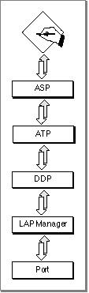
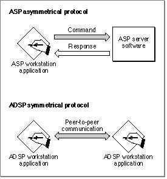

Legacy Document
Important: The information in this document is obsolete and should not be used for new development.
Important: The information in this document is obsolete and should not be used for new development.


About ASP
The AppleTalk Session Protocol (ASP) allows one or more ASP workstation applications or processes to establish a session with the same server at the same time. To track communication from various sessions, ASP assigns a unique session identifier that is referred to as a session reference number to each session. ASP is an asymmetrical protocol that provides one set of services to the workstation and a different set of services to
the server. The ASP workstation application always initiates the process of setting
up a session and the communication across a session, and the ASP server replies to commands that it receives. (ASP is built on top of ATP, and it follows the transaction model of ATP while adding session-connection services.) The only case in which an ASP server can initiate communication is through the ASP attention mechanism. Figure 8-1 shows ASP and its underlying protocols.Figure 8-1 ASP and its underlying protocols

You can open an ASP session and send commands to the ASP server for a higher-level protocol, such as AFP, to interpret and execute. The commands that you send to an
- Note
- To open a session with an ASP server, you must know the server's internet socket address; you can use the Name-Binding Protocol (NBP) to obtain the internet socket address of any ASP server that advertises its services on the network.

ASP server must follow the syntax prescribed by the higher-level protocol that is a client of the ASP server. ASP simply transfers the commands, and the ASP server returns
a response.For example, the AppleShare server is AppleTalk's ASP server implementation. AFP uses the services of ASP to allow a user to manipulate files on an AppleShare server. (AFP is an example of an ASP workstation application.) As long as the ASP session is open,
the workstation can send AFP commands to request directory information, change filenames, and so forth.ASP ensures that commands from a workstation are delivered to the ASP server without duplication in the same order in which they were sent. This feature is useful for imple-
menting applications that are state dependent, that is, applications in which the response to a request is dependent on a previous request. A workstation application connecting to a file server to read a file is an example of a state-dependent application: before the application can read the file, it must have first issued a request to open the file.ASP also provides an attention mechanism that allows the server to send a message to the workstation. For example, a file server can use this messaging system to notify all of the workstations that are using the file server that it is shutting down. ASP is responsible for closing down the session if one end fails or becomes unreachable, and it will inform the workstation applications of its action. The .XPP driver implements ASP.
Once again, if your application requires a session-oriented protocol, you should consider whether to use ADSP instead of ASP. ASP and ADSP have in common the salient feature that they are both session-oriented protocols. However, they each provide a different type of session-oriented service. Although the differences between them are not parallel, in contrasting the two protocols it is helpful to recognize that ASP is limited by the structure of a transaction because it is built on top of ATP and that ADSP entails more flexibility because it is built directly on top of DDP. Figure 8-2 illustrates the different behavior and functions of the two protocols.
Figure 8-2 Differences between ASP and ADSP

- Please read this note before you continue
- ASP provides an application programming interface for the workstation side only. The primary use of ASP is to provide services for the AppleTalk Filing Protocol (AFP). In most cases, you will not need to use ASP. Because very few application program developers use ASP, this chapter does not include a "Using" section. It includes only an overview of ASP and an ASP reference section.